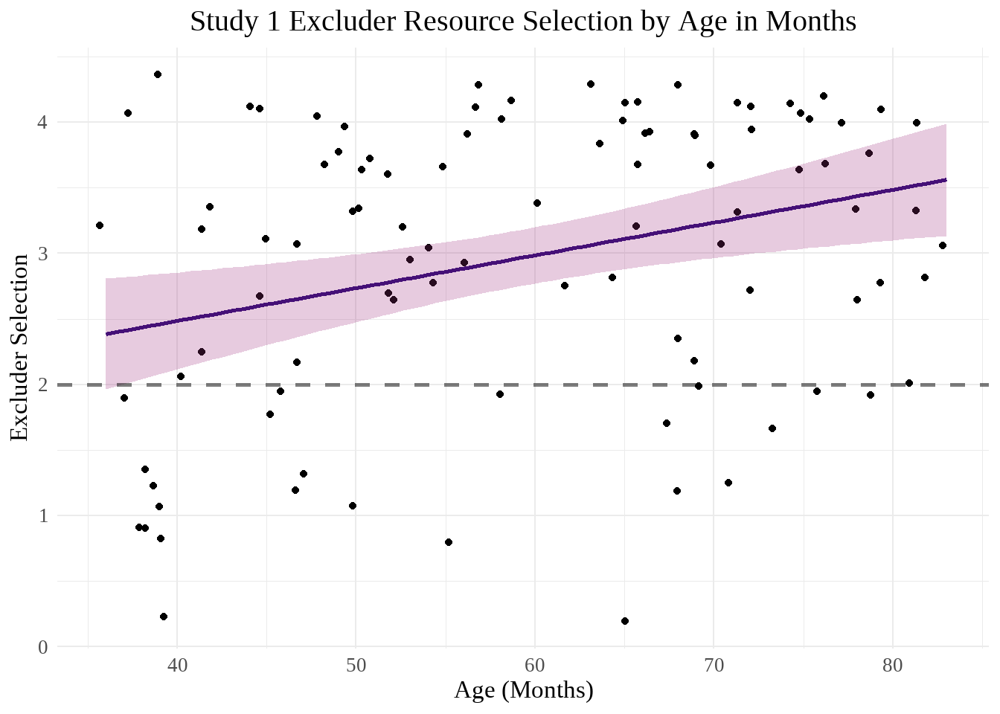
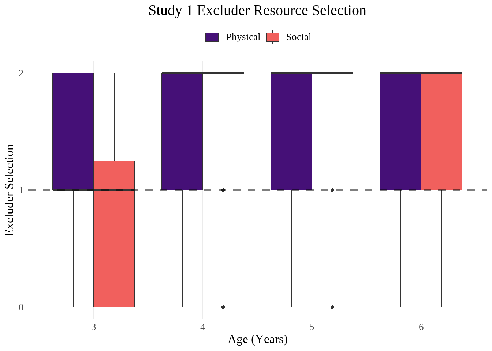
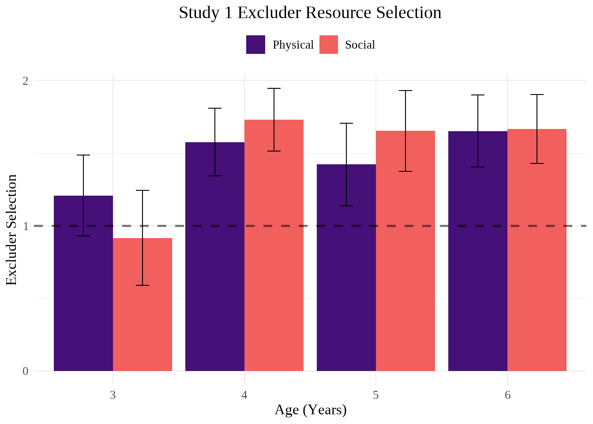

library(readxl)
library(tidyverse)
library(lme4)
library(effsize)
library(showtext)
library(viridis)
showtext_auto()SEAS Study 1 Main Analyses
Analyses for Study 1 of the Social Exclusion and Status Study. See our pre-registration for more details.
Packages
Data Preparation
seas_full <- read_excel("../Data/FINAL SEAS V1 Dataset.xlsx")
seas <- filter(seas_full, final_data == "Y") #filtering out excluded participantsseas <- seas |>
mutate(
DOB = make_date(birth_year, birth_month, birth_day), #creating date of birth and date of test columns
DOT = as_date(DOT),
.before = DOT
) |>
mutate(
age_months = interval(DOB, DOT) %/% months(1), .after = DOT #calculating age in months
)magma_colors <- c("#000004FF", "#180F3EFF", "#451077FF", "#721F81FF", "#9F2F7FFF", "#CD4071FF", "#F1605DFF", "#FD9567FF", "#FEC98DFF", "#FCFDBFFF") #from magma(10)Demographics
full_count <- nrow(seas_full)
full_count_nopilot <- seas_full |>
filter(str_detect(subject, "^SEAS-._P..$", negate = TRUE)) |> #excluding pilot participants
nrow()
#Gender
gender_count <- seas |>
group_by(gender) |>
summarise(n = n())
#Age
age_count <- seas |>
group_by(age) |>
summarise(n = n())
#Race/Ethnicity
identity_count <- seas |>
mutate(
identity = if_else(str_length(identity) > 3, "MX", identity) #Re-classifying anyone with more than one selection as "mixed race"
) |>
group_by(identity) |>
summarise(n = n()) |>
arrange(desc(n))103 children participated in the study, and there are 100 participants in the final SEAS dataset, 49 boys and 51 girls.
There are 24 3-year-olds, 26 4-year-olds, 26 5-year-olds, and 24 6-year-olds (50 in the 3-4 group and 50 in the 5-6 group).
And there are 64 participants who identify as White or European American, 20 as Asian, 2 as Middle Eastern or North African, 1 as Hispanic, Latino/Latina/Latinx, or Spanish, and 13 as multiple races or another race/ethnicity not listed. There are 0 participants who identify as Native Hawaiian or Pacific Islander, and 0 as American Indian or Alaska Native.
3. Do children use information about social exclusion to determine who has more physical and social resources?
Hypothesis 1
We expect that children will identify the excluder as having more resources.
#Convert excluder resource selection to numeric and calculate sum score
seas <- seas |>
mutate(
resource_1 = case_when(
resource_1 == "excluder" ~ 1,
resource_1 == "excluded" ~ 0,
is.na(resource_1) ~ NA), #One participant who did not answer the first resource question
resource_2 = if_else(resource_2 == "excluder", 1, 0),
resource_3 = if_else(resource_3 == "excluder", 1, 0),
resource_4 = if_else(resource_4 == "excluder", 1, 0),
resource_total = resource_1 + resource_2 + resource_3 + resource_4
)
#Physical and social resources sum scores
seas <- seas |>
mutate(
resource_physical = case_when(
resource_type_1 == "physical" ~ resource_1,
resource_type_2 == "physical" ~ resource_2
),
resource_social = case_when(
resource_type_1 == "social" ~ resource_1,
resource_type_2 == "social" ~ resource_2
)
) |>
mutate(
resource_physical = case_when(
resource_type_3 == "physical" ~ resource_physical + resource_3,
resource_type_4 == "physical" ~ resource_physical + resource_4
),
resource_social = case_when(
resource_type_3 == "social" ~ resource_social + resource_3,
resource_type_4 == "social" ~ resource_social + resource_4
)
)Preliminary Analysis
#Pivoting to examine trial-by-trial
resource_pivoted <- seas |>
select(subject, gender, siblings, age_months, starts_with("type"), matches("resource_type_.$"), matches("resource_.$")) |>
pivot_longer(
cols = c(starts_with("type"), starts_with("resource")),
names_to = c(".value", "trial"),
names_pattern = "(.*)_(.)$"
) |>
rename(response = resource)
#Binomial GLMM
resource_glmm <- summary(glmer(
response ~ trial + type + resource_type + gender +siblings + age_months + (1 | subject),
data = resource_pivoted,
family = "binomial"
)) #rank-deficient; only age is sigfixed-effect model matrix is rank deficient so dropping 1 column / coefficientWarning in checkConv(attr(opt, "derivs"), opt$par, ctrl = control$checkConv, :
Model failed to converge with max|grad| = 0.0307068 (tol = 0.002, component 1)resource_glmmGeneralized linear mixed model fit by maximum likelihood (Laplace
Approximation) [glmerMod]
Family: binomial ( logit )
Formula: response ~ trial + type + resource_type + gender + siblings +
age_months + (1 | subject)
Data: resource_pivoted
AIC BIC logLik -2*log(L) df.resid
438.1 482.0 -208.0 416.1 388
Scaled residuals:
Min 1Q Median 3Q Max
-2.9208 -0.5452 0.3566 0.5020 1.3843
Random effects:
Groups Name Variance Std.Dev.
subject (Intercept) 1.041 1.02
Number of obs: 399, groups: subject, 100
Fixed effects:
Estimate Std. Error z value Pr(>|z|)
(Intercept) -1.863732 0.863091 -2.159 0.03082 *
trial2 0.690134 0.362887 1.902 0.05720 .
trial3 0.416513 0.446127 0.934 0.35050
trial4 0.414105 0.456644 0.907 0.36449
typecyber -0.554164 0.361559 -1.533 0.12535
typeplaydoh 0.003527 0.375688 0.009 0.99251
resource_typesocial 0.105279 0.259822 0.405 0.68533
gendergirl 0.564052 0.340787 1.655 0.09789 .
siblings 0.218730 0.153350 1.426 0.15377
age_months 0.038586 0.012315 3.133 0.00173 **
---
Signif. codes: 0 '***' 0.001 '**' 0.01 '*' 0.05 '.' 0.1 ' ' 1
Correlation of Fixed Effects:
(Intr) trial2 trial3 trial4 typcyb typply rsrc_t gndrgr sblngs
trial2 -0.235
trial3 -0.273 0.385
trial4 -0.266 0.376 0.654
typecyber -0.198 0.007 0.426 0.417
typeplaydoh -0.005 0.001 -0.393 -0.439 0.001
rsrc_typscl -0.165 0.024 0.016 0.011 0.029 0.032
gendergirl -0.247 0.035 0.016 0.015 -0.029 0.001 0.007
siblings -0.328 0.013 0.008 0.010 -0.013 -0.003 0.003 0.089
age_months -0.839 0.045 0.022 0.022 -0.036 0.000 0.008 0.049 0.040
fit warnings:
fixed-effect model matrix is rank deficient so dropping 1 column / coefficient
optimizer (Nelder_Mead) convergence code: 0 (OK)
Model failed to converge with max|grad| = 0.0307068 (tol = 0.002, component 1)summary(glmer(
response ~ trial + resource_type + gender +siblings + age_months + (1 | subject),
data = resource_pivoted,
family = "binomial"
)) #if remove type, fails to convergeWarning in checkConv(attr(opt, "derivs"), opt$par, ctrl = control$checkConv, :
Model failed to converge with max|grad| = 0.00728743 (tol = 0.002, component 1)Generalized linear mixed model fit by maximum likelihood (Laplace
Approximation) [glmerMod]
Family: binomial ( logit )
Formula: response ~ trial + resource_type + gender + siblings + age_months +
(1 | subject)
Data: resource_pivoted
AIC BIC logLik -2*log(L) df.resid
436.5 472.4 -209.2 418.5 390
Scaled residuals:
Min 1Q Median 3Q Max
-2.9076 -0.6290 0.3630 0.5182 1.2081
Random effects:
Groups Name Variance Std.Dev.
subject (Intercept) 1.009 1.005
Number of obs: 399, groups: subject, 100
Fixed effects:
Estimate Std. Error z value Pr(>|z|)
(Intercept) -2.13913 0.83760 -2.554 0.01065 *
trial2 0.70742 0.36056 1.962 0.04976 *
trial3 0.70767 0.36057 1.963 0.04969 *
trial4 0.70660 0.36072 1.959 0.05013 .
resource_typesocial 0.11502 0.25812 0.446 0.65588
gendergirl 0.55498 0.33744 1.645 0.10004
siblings 0.21799 0.15214 1.433 0.15190
age_months 0.03823 0.01219 3.135 0.00172 **
---
Signif. codes: 0 '***' 0.001 '**' 0.01 '*' 0.05 '.' 0.1 ' ' 1
Correlation of Fixed Effects:
(Intr) trial2 trial3 trial4 rsrc_t gndrgr sblngs
trial2 -0.235
trial3 -0.235 0.463
trial4 -0.235 0.463 0.463
rsrc_typscl -0.162 0.023 0.023 0.019
gendergirl -0.257 0.033 0.033 0.033 0.010
siblings -0.337 0.016 0.016 0.019 -0.008 0.089
age_months -0.864 0.045 0.045 0.045 0.009 0.048 0.041
optimizer (Nelder_Mead) convergence code: 0 (OK)
Model failed to converge with max|grad| = 0.00728743 (tol = 0.002, component 1)summary(glmer(
response ~ trial + gender + siblings + age_months + (1 | subject),
data = resource_pivoted,
family = "binomial"
)) #if remove type and resource_type, converges and is not rank-deficient; age_months (and intercept) sigGeneralized linear mixed model fit by maximum likelihood (Laplace
Approximation) [glmerMod]
Family: binomial ( logit )
Formula: response ~ trial + gender + siblings + age_months + (1 | subject)
Data: resource_pivoted
AIC BIC logLik -2*log(L) df.resid
434.7 466.6 -209.3 418.7 391
Scaled residuals:
Min 1Q Median 3Q Max
-2.9950 -0.6157 0.3669 0.5142 1.2406
Random effects:
Groups Name Variance Std.Dev.
subject (Intercept) 1.004 1.002
Number of obs: 399, groups: subject, 100
Fixed effects:
Estimate Std. Error z value Pr(>|z|)
(Intercept) -2.08052 0.82547 -2.520 0.0117 *
trial2 0.70461 0.36021 1.956 0.0505 .
trial3 0.70459 0.36020 1.956 0.0505 .
trial4 0.70460 0.36021 1.956 0.0505 .
gendergirl 0.55410 0.33693 1.645 0.1001
siblings 0.21875 0.15200 1.439 0.1501
age_months 0.03821 0.01218 3.139 0.0017 **
---
Signif. codes: 0 '***' 0.001 '**' 0.01 '*' 0.05 '.' 0.1 ' ' 1
Correlation of Fixed Effects:
(Intr) trial2 trial3 trial4 gndrgr sblngs
trial2 -0.235
trial3 -0.235 0.462
trial4 -0.235 0.462 0.462
gendergirl -0.259 0.032 0.032 0.032
siblings -0.344 0.019 0.019 0.019 0.090
age_months -0.874 0.044 0.044 0.044 0.048 0.041In this GLMM, only age, with a z-value of 3.13 and a p-value of 0.0017, significantly influenced participants’ selections for the resource question.
Main Analysis
resource_ttest <- t.test(seas$resource_total, mu = 2)
physical_ttest <- t.test(seas$resource_physical, mu = 1)
social_ttest <- t.test(seas$resource_social, mu = 1)
resource_ttest
One Sample t-test
data: seas$resource_total
t = 8.6154, df = 98, p-value = 1.213e-13
alternative hypothesis: true mean is not equal to 2
95 percent confidence interval:
2.746337 3.193057
sample estimates:
mean of x
2.969697 physical_ttest
One Sample t-test
data: seas$resource_physical
t = 7.1804, df = 98, p-value = 1.358e-10
alternative hypothesis: true mean is not equal to 1
95 percent confidence interval:
1.336231 1.593062
sample estimates:
mean of x
1.464646 social_ttest
One Sample t-test
data: seas$resource_social
t = 6.9663, df = 99, p-value = 3.635e-10
alternative hypothesis: true mean is not equal to 1
95 percent confidence interval:
1.357585 1.642415
sample estimates:
mean of x
1.5 resource_d <- cohen.d(seas$resource_total, f = NA, mu = 2, na.rm = TRUE)
physical_d <- cohen.d(seas$resource_physical, f = NA, mu = 1, na.rm = TRUE)
social_d <- cohen.d(seas$resource_social, f = NA, mu = 1)In this one-sample t-test of overall resources, the t statistic was 8.62, with a p-value of 1.2^{-13} and a Cohen’s d of 0.87 (large), demonstrating that children chose the excluder as having more resources more often than chance.
These results hold when physical and social resources are examined separately. A t-test exploring the former produces a t statistic of 7.18 and a p-value of 3.6^{-10} with a Cohen’s d of 0.72 (medium).
A t-test examining only social resources resulted in a t of 6.97 and a p-value of 1.4^{-10}, with a Cohen’s d of 0.7 (medium).
Hypothesis 2
Older children will be more likely to identify excluders as controlling resources than younger children.
Main Analysis
#Linear models with age
#Total resources
resource_age_lm <- summary(lm(
resource_total ~ age_months,
data = seas
))
resource_age_lm
Call:
lm(formula = resource_total ~ age_months, data = seas)
Residuals:
Min 1Q Median 3Q Max
-3.1104 -0.6226 0.2648 0.8395 1.5900
Coefficients:
Estimate Std. Error t value Pr(>|t|)
(Intercept) 1.484421 0.478629 3.101 0.00252 **
age_months 0.025016 0.007855 3.185 0.00195 **
---
Signif. codes: 0 '***' 0.001 '**' 0.01 '*' 0.05 '.' 0.1 ' ' 1
Residual standard error: 1.071 on 97 degrees of freedom
(1 observation deleted due to missingness)
Multiple R-squared: 0.09467, Adjusted R-squared: 0.08533
F-statistic: 10.14 on 1 and 97 DF, p-value: 0.001948#Physical resources
physical_age_lm <- summary(lm(
resource_physical ~ age_months,
data = seas
))
physical_age_lm
Call:
lm(formula = resource_physical ~ age_months, data = seas)
Residuals:
Min 1Q Median 3Q Max
-1.5876 -0.4252 0.3582 0.4981 0.7463
Coefficients:
Estimate Std. Error t value Pr(>|t|)
(Intercept) 0.928783 0.283763 3.273 0.00147 **
age_months 0.009025 0.004657 1.938 0.05552 .
---
Signif. codes: 0 '***' 0.001 '**' 0.01 '*' 0.05 '.' 0.1 ' ' 1
Residual standard error: 0.635 on 97 degrees of freedom
(1 observation deleted due to missingness)
Multiple R-squared: 0.03728, Adjusted R-squared: 0.02735
F-statistic: 3.756 on 1 and 97 DF, p-value: 0.05552#Social resources
social_age_lm <- summary(lm(
resource_social ~ age_months,
data = seas
))
social_age_lm
Call:
lm(formula = resource_social ~ age_months, data = seas)
Residuals:
Min 1Q Median 3Q Max
-1.7957 -0.4040 0.2880 0.5123 0.8431
Coefficients:
Estimate Std. Error t value Pr(>|t|)
(Intercept) 0.594175 0.306386 1.939 0.05534 .
age_months 0.015209 0.005012 3.034 0.00309 **
---
Signif. codes: 0 '***' 0.001 '**' 0.01 '*' 0.05 '.' 0.1 ' ' 1
Residual standard error: 0.6897 on 98 degrees of freedom
Multiple R-squared: 0.08588, Adjusted R-squared: 0.07656
F-statistic: 9.207 on 1 and 98 DF, p-value: 0.003086In a linear model with only age, age significantly influenced resource selection (t = 3.18, p = 0.0019. When examining physical and social resources separately, age was on the border of significance for physical resources (t = 1.94 and p = 0.056) and social resources was significant (t = 3.03 and p = 0.0031).
resource_age_scatter <- seas |>
ggplot(aes(x = age_months, y = resource_total)) +
geom_jitter() +
stat_smooth(
method = "lm",
formula = y ~ x,
color = magma_colors[3],
fill = magma_colors[5],
alpha = 0.25) +
geom_hline(yintercept = 2, linetype = "dashed", linewidth = 1, alpha = 0.5) +
labs(
title = "Study 1 Excluder Resource Selection by Age in Months",
x = "Age (Months)",
y = "Excluder Selection"
) +
theme_minimal() +
theme(
plot.title = element_text(hjust = 0.5, size = 30),
text = element_text(family = "serif", size = 25)
)
resource_age_scatterWarning: Removed 1 row containing non-finite outside the scale range
(`stat_smooth()`).Warning: Removed 1 row containing missing values or values outside the scale range
(`geom_point()`).
#Total resources
resource_age_boxplot <- seas |>
ggplot(aes(x = as.factor(age), y = resource_total, fill = as.factor(age))) +
geom_boxplot(fill = c(magma_colors[3], magma_colors[5], magma_colors[7], magma_colors[9])) +
labs(
title = "Study 1 Excluder Resource Selection",
x = "Age (Years)",
y = "Excluder Selection"
) +
geom_hline(yintercept = 2, linetype = "dashed", linewidth = 1, alpha = 0.5) +
theme_minimal() +
theme(
plot.title = element_text(hjust = 0.5, size = 30),
text = element_text(family = "serif", size = 25)
)
resource_age_boxplotWarning: Removed 1 row containing non-finite outside the scale range
(`stat_boxplot()`).
#Physical and social resources
physsoc_age_boxplot <- seas |>
pivot_longer(c("resource_physical", "resource_social"), names_to = "resource_total_type", names_pattern = ".*_(.*)", values_to = "excluder_select") |>
ggplot(aes(x = as.factor(age), y = excluder_select, fill = resource_total_type)) +
geom_boxplot(
position = "dodge") +
labs(
title = "Study 1 Excluder Resource Selection",
x = "Age (Years)",
y = "Excluder Selection",
fill = NULL
) +
geom_hline(yintercept = 1, linetype = "dashed", linewidth = 1, alpha = 0.5) +
scale_fill_manual(
values = c(magma_colors[3], magma_colors[7]),
labels = c("Physical", "Social")) +
theme_minimal() +
theme(
legend.position = "top",
plot.title = element_text(hjust = 0.5, size = 30),
text = element_text(family = "serif", size = 25)
) +
scale_y_continuous(breaks = c(0, 1, 2))
physsoc_age_boxplotWarning: Removed 1 row containing non-finite outside the scale range
(`stat_boxplot()`).
resource_column <- seas |>
pivot_longer(c("resource_physical", "resource_social"), names_to = "resource_total_type", names_pattern = ".*_(.*)", values_to = "excluder_select") |>
ggplot(aes(x = as.factor(age), y = excluder_select, fill = resource_total_type)) +
stat_summary(
fun = "mean",
geom = "bar",
position = position_dodge(width = 0.9)
) +
stat_summary(
fun.data = "mean_cl_normal",
geom = "errorbar",
width = 0.2,
linewidth = 0.5,
position = position_dodge(width = 0.9)
) +
labs(
title = "Study 1 Excluder Resource Selection",
x = "Age (Years)",
y = "Excluder Selection",
fill = NULL
) +
geom_hline(yintercept = 1, linetype = "dashed", linewidth = 1, alpha = 0.5) +
scale_fill_manual(
values = c(magma_colors[3], magma_colors[7]),
labels = c("Physical", "Social")) +
theme_minimal() +
theme(
legend.position = "top",
plot.title = element_text(hjust = 0.5, size = 30),
text = element_text(family = "serif", size = 25)
) +
scale_y_continuous(breaks = c(0, 1, 2))
resource_columnWarning: Removed 1 row containing non-finite outside the scale range (`stat_summary()`).
Removed 1 row containing non-finite outside the scale range (`stat_summary()`).
#Do the error bars blend into the physical color too much?